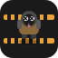
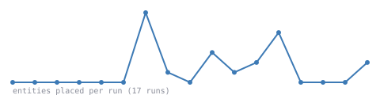

Full structured game state in — entities, inventories, recipes, research — Python code out. No pixels, no vision model, just a model driving a real, running Factorio server through its own Lua/RCON API.
View on GitHub Run itRecorded run — live in-browser preview coming this weekend.
Every turn is the same: the model gets what happened last — printed output, or a real error — as its observation, and writes back a short Python snippet. agent.py runs that through FLE's gym environment against the Lua/RCON bridge inside a headless Factorio server, and whatever comes back becomes the next observation. No hardcoded plan. It reads what's real and decides what's next.
Runs on a local model by default. No API key, no cloud bill.

Real entity-placement counts pulled from every run's transcript — not a fabricated curve.